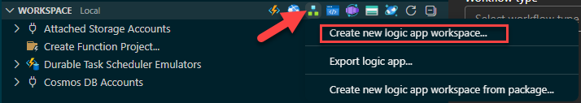
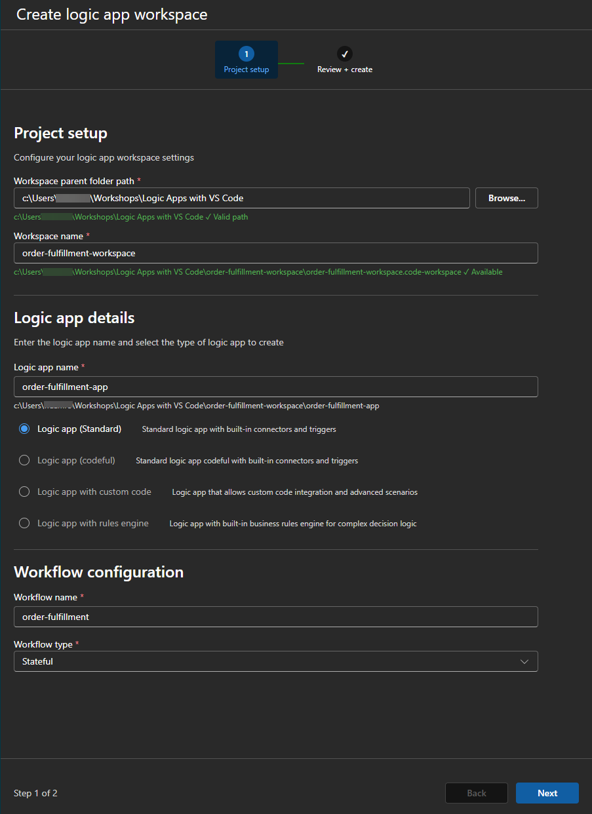
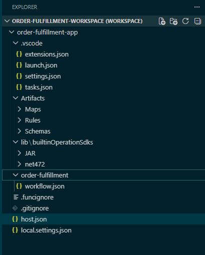

Scenario and Objectives
An order API must reject invalid requests, reserve in-stock orders, and route unavailable inventory for review. In this lab, Compose actions stand in for external systems so the orchestration can run entirely on your machine.
- Create a Logic Apps Standard project and stateful workflow.
- Use conditions, scopes, variables, and run-after behavior.
- Run and debug the workflow locally.
- Separate workflow orchestration from replaceable integration boundaries.
Workflow Design
flowchart LR
A[HTTP order] --> V{Valid order?}
V -->|No| R[400 response]
V -->|Yes| T[Try fulfillment scope]
T --> I{Inventory available?}
I -->|Yes| C[Confirmed]
I -->|No| Q[Manual review]
T -. failure .-> F[Failure scope]
C --> S[200 response]
Q --> S
F --> E[500 response]
classDef azure fill:#e6f2fb,stroke:#0078d4,stroke-width:2,color:#0f1722;
classDef result fill:#e7f5e7,stroke:#107c10,stroke-width:2,color:#103010;
class A,V,T,I,F azure; class R,C,Q,S,E result;Prerequisites
- Visual Studio Code with the Azure Logic Apps (Standard) extension.
- Azure Functions Core Tools v4 and the runtime required by the extension.
- Azurite if your local Standard runtime configuration uses local Azure Storage.
- A parent folder outside this workshop repository where the extension can create the generated workspace.
Create the Local Workspace
- In the Azure view, find Logic Apps (Standard), open the Workspace menu, and select Create new logic app workspace....

Open the Workspace menu and select Create new logic app workspace.... - On Project setup, select a Workspace parent folder path outside this workshop repository and enter
order-fulfillment-workspacefor Workspace name. - Under Logic app details, enter
order-fulfillment-appfor Logic app name and select Logic app (Standard).
For steps 2 and 3, configure the workspace location and name, then enter the logic app name and select Logic app (Standard). - Under Workflow configuration, enter
order-fulfillmentfor Workflow name and select Stateful for Workflow type. - Select Review + Create, review the summary, and then select Create.
- VS Code opens the newly created workspace in a new window. Switch to that VS Code window and continue the rest of the lab there.
- Confirm the generated logic app project contains
host.json,local.settings.json, and anorder-fulfillment/workflow.jsondefinition.
Compare your Explorer tree with the generated workspace structure shown here. - In Explorer, expand
order-fulfillment-app/order-fulfillment, right-clickworkflow.json, and select Open designer. - When VS Code asks whether to enable connectors in Azure, select Skip for now. This lab uses built-in operations and does not require Azure-hosted connectors.
- After the designer renders, add When a HTTP request is received as the trigger and set the method to POST.
- Paste the request schema below and save the designer.
{
"type": "object",
"properties": {
"orderId": { "type": "string" },
"customerId": { "type": "string" },
"quantity": { "type": "integer" },
"availableStock": { "type": "integer" }
},
"required": ["orderId", "customerId", "quantity", "availableStock"]
}Source control
The generated local.settings.json can contain local secrets. Keep it out of source control and use app settings or secret references after deployment.
Build the Fulfillment Flow
- Immediately after the HTTP trigger and before the condition, select Add an action, search for Initialize variable, and add the built-in action. Set Name to
fulfillmentStatus, Type to String, and Value topending. - Below Initialize variable, add a Condition named Order is valid. Configure its single condition row as follows:
- Select the left Choose a value field, open Expression, paste the expression below without a leading
@, and select Add. - Set the operator to is equal to.
- In the right Choose a value field, open Expression, enter
true, and select Add. Use the Boolean expressiontrue, not the text string"true".
and( not(empty(triggerBody()?['orderId'])), not(empty(triggerBody()?['customerId'])), greater(int(triggerBody()?['quantity']), 0), greaterOrEquals(int(triggerBody()?['availableStock']), 0) )
You do not need to add these four checks as separate condition rows. The
and(...)expression returns one Boolean result.Verify before continuing: Order is valid must contain the completeand(...)expression above. Do not use theavailableStockversusquantityexpression here; that comparison belongs only in the nested Inventory is available condition. - Select the left Choose a value field, open Expression, paste the expression below without a leading
- In the False branch, add a Response action. Set Status Code to
400, then copy this JSON into Body:{ "status": "rejected", "reason": "Invalid order" }Before leaving the action, confirm that both Status Code and Body remain populated after the designer saves.
- Build the inventory check inside the True branch:
- Select the + in the True branch, select Add an action, search for Scope, and add the built-in Control Scope action.
- Rename the Scope action to Try fulfillment. The scope groups the inventory decision so its overall success or failure can be handled later.
- Select Add an action inside the scope, search for Condition, and add the built-in Control Condition action.
- Rename the nested condition to Inventory is available.
- In the condition's left Choose a value field, open Expression and copy:
int(triggerBody()?['availableStock'])
- Set the operator to is greater than or equal to.
- In the right Choose a value field, open Expression and copy:
int(triggerBody()?['quantity'])
- In the inventory True branch, add Set variable, select
fulfillmentStatus, and set Value toconfirmed. In the inventory False branch, add another Set variable, selectfulfillmentStatus, and set Value tomanual-review. - Add the success response outside Try fulfillment but still inside the outer Order is valid True branch. Select the + directly below the orange boundary of the entire Try fulfillment scope, then add a Response action. Do not select a + inside the scope. The Response card must appear below, not within, the orange scope boundary. Leave its default run-after behavior as is successful, set Status Code to
200, and copy this JSON into Body:{ "orderId": "@{triggerBody()?['orderId']}", "status": "@{variables('fulfillmentStatus')}", "runId": "@{workflow()?['run']?['name']}" }In your current workflow, delete the 200 Response shown inside Try fulfillment and recreate it at this outer location.
- Add the failure handler between the Try fulfillment scope and the 200 Response, as a parallel sibling of that Response:
- Select the + between Try fulfillment and the 200 Response. Make sure this + is outside the orange Try fulfillment boundary.
- Select Add a parallel branch.
- In the new branch, select Add an action, search for Scope, add the built-in Control Scope, and rename it Handle failure.
- Open Handle failure settings and select Run after. Clear is successful, select has failed and has timed out, and save the settings. These statuses apply to Try fulfillment.
- Inside Handle failure, add a Response action and set Status Code to
500. Copy this JSON into Body:
{ "status": "failed", "reason": "Order fulfillment failed" }
Run Locally
- Save the workflow. If your local settings use Azurite, start Azurite before continuing.
- In the VS Code window containing
order-fulfillment-workspace, press F5. If VS Code asks which configuration to run, select the generated Logic Apps project configuration. - Open the bottom Terminal panel. Wait until the host reports that it started, and then leave this terminal running.
- In the Terminal panel, select the + to open a second PowerShell terminal.
- In the second terminal, run the following setup once. The local management endpoint returns the signed callback URL required to invoke the HTTP trigger. The helper sends a payload and displays both the HTTP status and response body, including expected error responses.
$managementUri = 'http://localhost:7071/runtime/webhooks/workflow/api/management/workflows/order-fulfillment/triggers/When_an_HTTP_request_is_received/listCallbackUrl?api-version=2022-05-01' $callbackUri = (Invoke-RestMethod ` -Uri $managementUri ` -Method Post ).value function Invoke-OrderWorkflow { param([hashtable]$Payload) $body = $Payload | ConvertTo-Json try { $response = Invoke-WebRequest ` -Uri $callbackUri ` -Method Post ` -ContentType 'application/json' ` -Body $body [pscustomobject]@{ StatusCode = [int]$response.StatusCode ResponseBody = $response.Content } | Format-List } catch { $responseBody = $_.ErrorDetails.Message if ([string]::IsNullOrWhiteSpace($responseBody) -and $_.Exception.Response.Content) { $responseBody = $_.Exception.Response.Content.ReadAsStringAsync().GetAwaiter().GetResult() } if ([string]::IsNullOrWhiteSpace($responseBody) -and $_.Exception.Response.GetResponseStream) { $reader = [System.IO.StreamReader]::new($_.Exception.Response.GetResponseStream()) try { $responseBody = $reader.ReadToEnd() } finally { $reader.Dispose() } } [pscustomobject]@{ StatusCode = [int]$_.Exception.Response.StatusCode ResponseBody = $responseBody } | Format-List } } - Keep the second terminal open and run each test separately.
Test 1: Confirmed order
Run:
Invoke-OrderWorkflow -Payload @{
orderId = 'ORD-1001'
customerId = 'C-42'
quantity = 2
availableStock = 8
}The status code should be 200, and the response body should contain the status confirmed.
Test 2: Manual review
Run:
$body = @{
orderId = 'ORD-1002'
customerId = 'C-42'
quantity = 10
availableStock = 3
} | ConvertTo-Json
try {
$response = Invoke-WebRequest `
-Uri $callbackUri `
-Method Post `
-ContentType 'application/json' `
-Body $body
[pscustomobject]@{
StatusCode = [int]$response.StatusCode
ResponseBody = $response.Content
} | Format-List
}
catch {
[pscustomobject]@{
StatusCode = [int]$_.Exception.Response.StatusCode
ResponseBody = $_.ErrorDetails.Message
} | Format-List
}The status code should be 200, and the response body should contain "orderId":"ORD-1002" and "status":"manual-review".
Test 3: Rejected order
400. In Body, enter the JSON below, save the workflow, and confirm the Body remains populated after the save.
{
"status": "rejected",
"reason": "Invalid order"
}Run:
Invoke-OrderWorkflow -Payload @{
orderId = ''
customerId = 'C-42'
quantity = 0
availableStock = 3
}The output should show StatusCode : 400 and ResponseBody : {"status":"rejected","reason":"Invalid order"}. If the status is 400 but the body is still empty, reopen the rejected run in local run history and inspect the False-branch Response action's inputs to confirm that its Body was saved.
After each request, inspect the host terminal for the new run. You can also open the workflow's local run history from the Logic Apps extension to inspect action inputs, outputs, skipped branches, and scope status.
Validation Checklist
- The first payload returns
confirmed. - The second payload returns
manual-review. - The third payload returns HTTP 400.
- Each completed response contains a unique run ID.
- The failure scope remains skipped during successful tests.
To exercise failure handling, temporarily add a Compose action with an invalid expression inside Try fulfillment, run once, confirm the 500 response, and then remove the deliberate fault.
Troubleshooting
| Symptom | Check |
|---|---|
| F5 appears to do nothing | Save the workflow, make sure you are in the new VS Code window that contains order-fulfillment-workspace, then open View > Terminal and check the generated task terminal for startup output. |
| Host does not start | Confirm Core Tools v4, extension prerequisites, and storage settings; start Azurite if configured. |
| Callback URL lookup fails | Confirm the workflow and trigger names match the names in $managementUri, and verify that the local host finished starting on port 7071. Review the host terminal for an earlier startup error. |
| HTTP 400 has an empty body | Open the False-branch Response action and restore its JSON Body. Save the workflow, confirm the Body remains populated, and run the rejected-order test again. |
| Designer cannot load | Open the workspace root rather than only the workflow folder, then restart the extension host. |
| Two responses try to run | Review run-after settings so success and failure responses are mutually exclusive. |
Cleanup and References
Stop the local host and Azurite. Delete the generated project folder if you do not need it, and remove any deployed Standard resource created while extending the lab.